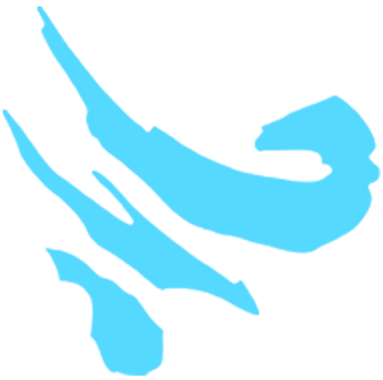
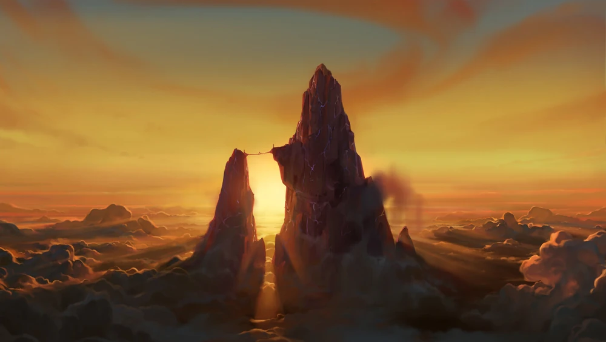

Niebo
Opis
Magia nieba czerpie z rozległego nieba, energii i ruchu wiatrów oraz mocy burz. To źródło jest najsilniejsze podczas burzy, a jego arkana wymaga skupienia i głębokich oddechów. Stworzenia związane z Niebem Pierwotnym, w tym między innymi Podniebne elfy, są zazwyczaj szybkie i sprytne i cenią sobie swobodę dokonywania własnych wyborów w życiu. Aby mag mógł użyć magii nieba bez magicznego artefaktu, takiego jak Pierwotny Kamień, mag musi wykorzystać pobliską obfitość Pierwotnego Źródła, taką jak burza z piorunami lub silny wietrzyk.
Tajemnica
Tajemnica Nieba polega na zrozumieniu, że niebo i jego wiatry są wszędzie, że cały świat jest otoczony magią Nieba, że jesteś w nim, a ono jest w tobie, że wdychasz je z każdym oddechem. W związku z tym tajemnica wymaga od kogoś zrozumienia, że nie potrzebuje skrzydeł, aby opanować tajemnicę Nieba, ale że sam jest skrzydłem niesionym przez Pierwotne Źródło. Nadaje nie tylko szybki ruch i wdzięk, ale także szybkość myślenia, umiejętność latania i umiejętność ucieczki z uwięzienia.
Splot
Splotem Nieba jest Wieża Burzy, góra leżąca za Pustynią Północy. Jest to najwyższy punkt w całej Xadii, kamienna iglica tak wysoka, że przebija niebo. Starożytne Arcysmoki Nieba wyrzeźbiły w niej pałac z litego kamienia, który stał się legowiskiem obecnych smoków królewskich. To właśnie z tego miejsca w niebie Avizandum i Zubeia nieustannie strzegli magicznych ziem Xadii.
Quiz